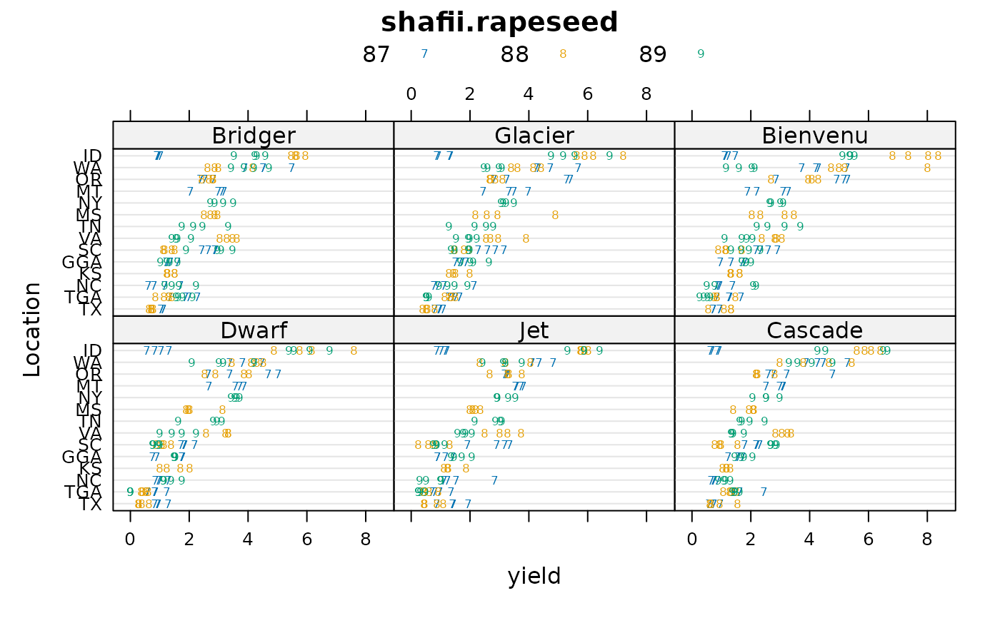
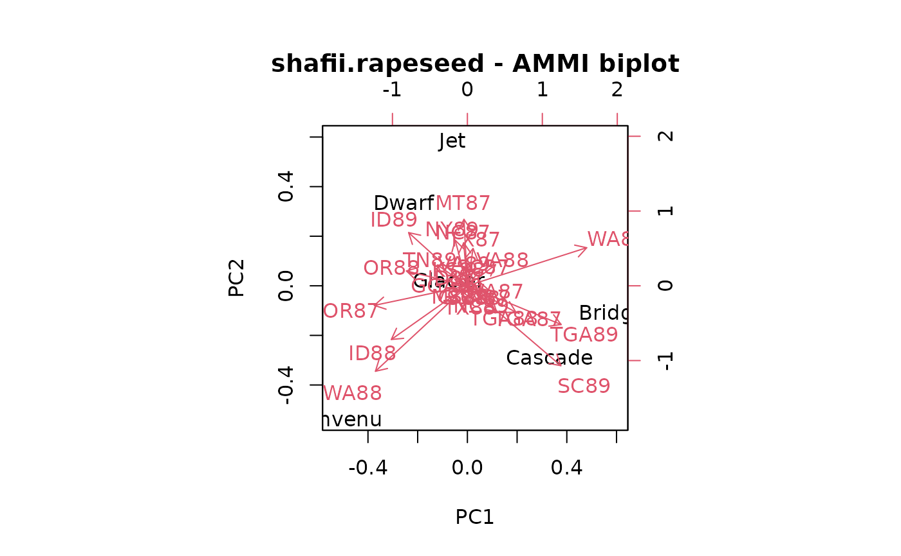

Multi-environment trial of rapeseed in U.S.
shafii.rapeseed.RdRapeseed yield multi-environment trial, 6 genotypes, 3 years, 14 loc, 3 rep
Format
A data frame with 648 observations on the following 5 variables.
yearyear, numeric: 87, 88, 89
loclocation, 14 levels
reprep, 3 levels
gengenotype, 6 levels
yieldyield, kg/ha
Details
The data are from the U.S. National Winter Rapeseed trials conducted in 1986, 1987, and 1988. Trial locations included Georgia (GGA, TGA), Idaho (ID), Kansas (KS), Mississippi (MS), Montana (MT), New York (NY), North Carolina (NC), Oregon (OR), South Carolina (SC), Tennessee (TN), Texas (TX), Virginia (VA), and Washington (WA).
SAS codes for the analysis can be found at https://webpages.uidaho.edu/cals-statprog/ammi/index.html
Electronic version from: https://www.uiweb.uidaho.edu/ag/statprog/ammi/yld.data
Used with permission of Bill Price.
Source
Bahman Shafii and William J Price, 1998. Analysis of Genotype-by-Environment Interaction Using the Additive Main Effects and Multiplicative Interaction Model and Stability Estimates. JABES, 3, 335--345. https://doi.org/10.2307/1400587
References
Matthew Kramer (2018). Using the Posterior Predictive Distribution as a Diagnostic Tool for Mixed Models. Joint Statistical Meetings 2018, Biometrics Section. https://www.ars.usda.gov/ARSUserFiles/3122/KramerProceedingsJSM2018.pdf
Reyhaneh Bijari and Sigurdur Olafsson (2022). Accounting for G×E interactions in plant breeding: a probabilistic approach https://doi.org/10.21203/rs.3.rs-2052233/v1
Examples
library(agridat)
data(shafii.rapeseed)
dat <- shafii.rapeseed
dat$gen <- with(dat, reorder(gen, yield, mean))
dat$loc <- with(dat, reorder(loc, yield, mean))
dat$yield <- dat$yield/1000
dat <- transform(dat, rep=factor(rep), year=as.factor(as.character(year)))
dat$locyr = paste(dat$loc, dat$year, sep="")
# The 'means' of reps
datm <- aggregate(yield~gen+year+loc+locyr, data=dat, FUN=mean)
datm <- datm[order(datm$gen),]
datm$gen <- as.character(datm$gen)
datm$gen <- factor(datm$gen,
levels=c("Bienvenu","Bridger","Cascade",
"Dwarf","Glacier","Jet"))
dat$locyr <- reorder(dat$locyr, dat$yield, mean)
libs(lattice)
# This picture tells most of the story
dotplot(loc~yield|gen,group=year,data=dat,
auto.key=list(columns=3),
par.settings=list(superpose.symbol=list(pch = c('7','8','9'))),
main="shafii.rapeseed",ylab="Location")

# AMMI biplot. Remove gen and locyr effects.
m1.lm <- lm(yield ~ gen + locyr, data=datm)
datm$res <- resid(m1.lm)
# Convert to a matrix
libs(reshape2)
dm <- melt(datm, measure.var='res', id.var=c('gen', 'locyr'))
dmat <- acast(dm, gen~locyr)
# AMMI biplot. Figure 1 of Shafii (1998)
biplot(prcomp(dmat), main="shafii.rapeseed - AMMI biplot")
